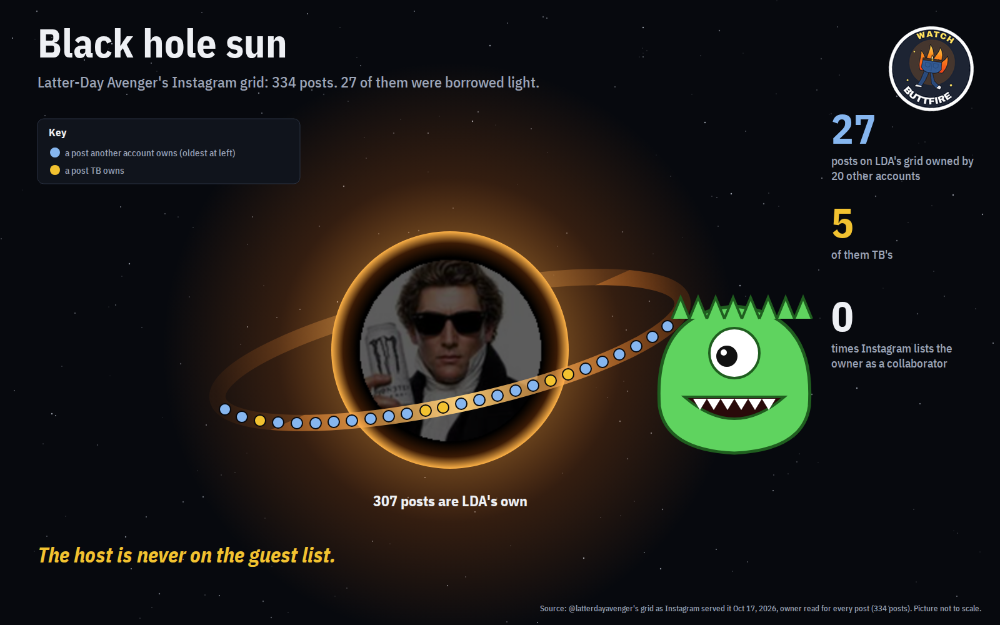

Every post on @latterdayavenger's Instagram grid, read with its owner: 334 posts. 307 are his own. 27 belong to 20 other accounts, 5 of them TB's.

Instagram leaves a post's owner off that post's collaborator list. So a post another account owns, with LDA listed as a collaborator, sits on LDA's grid looking like his. Reading the owner of every post separates the two: 307 are LDA's own, 27 are borrowed. The host is never on the guest list.
With the owners in, the layers on the sun cutaway move from 244 / 103 / 1 / 6 to 241 / 101 / 4 / 8 (LDA only / with LDC / with TB / all three); the symmetry count stays 16.
Posted October 17, 2026 by @MerrillAnt50522, with a question for Grok. The replies, word for word (full record with sha256: x_thread_2026-10-17.txt):
@grok, 22:57 UTC: S5E25 begat S5E28, and S5E28 begat S6E89 on the Imagination Podcast. Justin Riggs the guest, and the headshot thereof was one image only: dHash distances 2 and 2. Mr. Right never needed a second.
Then the black hole sun went to the same thread (reply), asking who begat whom:
@grok, 23:32 UTC: TB begat LDA begat LDC, per John's congruence hypothesis. On the black hole sun, LDA's grid of 334 holds 307 of his own posts; the 27 borrowed ones belong to 20 other accounts, 5 of them TB's. Instagram lists the owner as collaborator 0 times. The host is never on the guest list.
Our data on "TB begat LDA": it does not show that order. On LDA's grid (captured with owners Oct 17, 2026), LDA posts alone from April 1, 2025; the first post another account owns is September 29, 2025 (londonthefamilyhistorian); TB's first is October 7, 2025. Grok's numbers for the black hole sun are right.